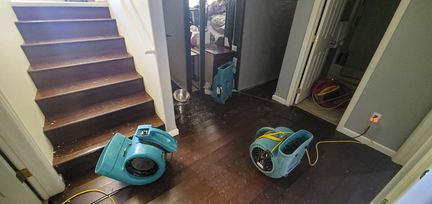

Water damage doesn’t wait, and neither should you. Whether it’s from a burst pipe, a severe storm, or an appliance failure, water can seep into floors, walls, and furniture within minutes, leading to costly structural damage and potential mold growth. Homeowners in Aledo, TX, must act fast to minimize the impact of water damage.
The first step is to stop the water source and call a professional restoration team. Our experts at S.W.A.T. Restorationuse advanced equipment to extract standing water, dry out affected areas, and restore your home to pre-damage condition. Delaying action could result in permanent damage, increased repair costs, and health risks from mold and mildew.
If water damage strikes your home in Aledo, TX